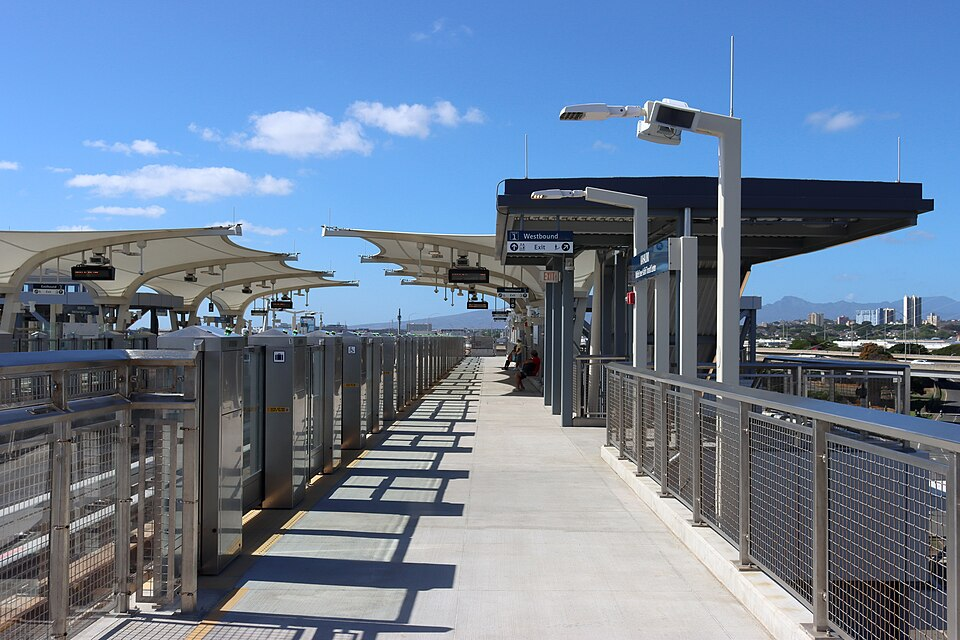

Kahauiki Rail Station
Place: Kahauiki Rail Station, Middle Street–Kalihi Transit Center, Honolulu, Oʻahu
Type: Skyline rail station / transit hub
Namesake: Kahauiki (“the little hau tree”), the historic ahupuaʻa between Moanalua and Kalihi
Story it tells: How a modern rail station restores the name of an ahupuaʻa once shaped by Kahauiki Stream, irrigated agriculture, wetlands, and coastal resources before military and urban development transformed the landscape.

Kahauiki Rail Station stands at the intersection of Kamehameha Highway and Middle Street, beside one of Oʻahu's busiest bus hubs and beneath the approaches to the H-1 Freeway. The surrounding area is dominated today by highways, military facilities, warehouses, and transportation infrastructure. The station's name, however, restores an older identity to a place long known simply as Middle Street: Kahauiki.
Kahauiki, meaning “the little hau tree,” was an ahupuaʻa situated between Moanalua and Kalihi. Its lands extended from the uplands toward the coastal flats of Keʻehi Lagoon, linking very different environments through the waters of Kahauiki Stream.
Fresh water made the lower valley particularly productive. Native Hawaiians diverted water from Kahauiki Stream through irrigation systems that supported agricultural terraces. Wetlands, mudflats, fishponds, and the shallow waters of Keʻehi provided fish, limu, shellfish, and other marine resources.
The hau remembered in the name grew near streams and wet areas, and its wood and fibers provided material for cordage, canoe parts, and numerous other purposes.
The most dramatic transformation of Kahauiki came much later. By the nineteenth century, lands within Kahauiki were held among the Crown and Government Lands of the Hawaiian Kingdom. Following the overthrow of the Hawaiian monarchy and annexation of Hawaiʻi, control of those lands passed through the Republic of Hawaiʻi to the United States.
The federal government quickly identified the value of the site and reserved portions of Kahauiki for military use. In 1899, land in the area was set aside for the U.S. Army, and construction of Fort Shafter began several years later. Established in 1905, Fort Shafter became the first permanent U.S. Army post on Oʻahu.
The arrival of the Army radically altered the upper portions of the old ahupuaʻa. Military buildings, roads, utilities, and other infrastructure replaced portions of the earlier agricultural landscape. Fort Shafter expanded further as the strategic importance of both Honolulu and nearby Pearl Harbor increased during the first half of the twentieth century.
World War II accelerated the transformation. Kahauiki sat along the critical corridor between Honolulu, Fort Shafter, Pearl Harbor, and other military installations west of the city. Middle Street and the surrounding roads became increasingly important for moving people and material through an expanding military and industrial landscape.
After the war, transportation infrastructure continued to reshape the lower lands. The H-1 Freeway crossed the old boundaries of Kahauiki, streams were channelized, and much of the coastal plain became occupied by highways, warehouses, industrial yards, and government facilities. The area became one of Honolulu's most heavily engineered transportation corridors.
Middle Street eventually became important to public transportation as well. The Kalihi Transit Center developed into a major hub for TheBus, concentrating numerous routes at the same geographic bottleneck that had carried travelers between Honolulu and points west for generations.
When Honolulu's rail system, Skyline, reached Middle Street, the station naming process looked for a traditional name to reconnect to the land. In 2019, the Hawaiian Station Naming Working Group selected Kahauiki, returning the name of the ahupuaʻa to everyday use rather than allowing the familiar ‘Middle Street’ to become the station's primary identity.
Kahauiki Rail Station opened in 2025 as the eastern terminus of Skyline's second operating segment. Its role as a transfer point is immediately visible in one of the station's most distinctive features: a massive elevated pedestrian bridge carries passengers across seven lanes of Kamehameha Highway directly between Skyline and the Kalihi Transit Center.
The bridge may eventually be joined by another. Long-range transit-oriented development plans include an additional elevated pedestrian connection extending makai across Nimitz Highway, linking the station area more directly with Keʻehi Lagoon. If constructed, the crossing would reconnect pedestrians with the shoreline side of an ahupuaʻa that highways and industrial development have isolated from the uplands.
Today, Kahauiki is again a gateway. Instead of agricultural paths and waterways connecting the uplands with Keʻehi, trains, buses, freeways, and pedestrian bridges move thousands of people through the same narrow corridor.
Kahauiki restores the name of the land beneath that infrastructure: an ahupuaʻa of streams, agriculture, wetlands, and coastal resources that became a military stronghold and one of Honolulu's busiest public transit hubs.